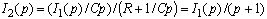

Второй уровень - "знать ... и уметь использовать" - это способность студента воспроизводить учебный материал с требуемой степенью научной точности; сформулировать и записать принцип, закон, теорему, определение, явление, событие и т. п., с достаточной полнотой доказать теорему, утверждение, описать явление и т. д., и уметь использовать усвоенные знания для решения типовых задач по известным ему методикам и выполнять конкретные действия с реальными объектами дисциплины (с возможным использованием справочной литературы).
Целью тестирования на 2-ом уровне является выявление способностей анализировать процессы и явления в электрических цепях и решать типовые задачи по дисциплине. Такую проверку можно провести, используя тесты на репродуктивную деятельность студента по воспроизведению (на подстановку, решение типовых задач, конструктивные тесты), т. е. на повторение ранее усвоенных операций.
Примеры тестов 2-го уровня:
1. Тест на подстановку (обычно пропущенного одного или нескольких факторов взаимосвязи процесса или элементов формулы): "Завершите написание формулы для определения реакции y(t) линейной электрической цепи на импульсное входное воздействие x(t), используя третью форму интеграла Дюамеля:

Дайте определение пропущенной величины".
Эталон (3 с. о.): Реакция линейной электрической цепи на импульсное воздействие равна (1)

где g(t - t) - импульсная (весовая) функция цепи (2) при нулевых начальных условиях на входное воздействие в виде смещённой по оси времени на интервал дельта-функции d(t - t) (3).
2. Тест - типовая задача:

"Определите передаточную проводимость цепи (см. рис.), если R = 1 Ом; L = 1 Гн; С = 1 Ф".
Эталон (4 с. о.):
(1) Передаточная проводимость цепи

(2) Воспользовавшись правилом делителя тока, запишем выходной операторный ток
.
(3) Операторный ток на входе цепи:
 .
.
(4) Проведя несложные преобразования, окончательно получим выражение передаточной проводимости
 .
.
3. Конструктивный тест: "Приведите алгоритм расчёта выходной величины y(t) операторным (Лапласа) методом при подключении линейной электрической цепи к источнику сигнала. Структура цепи и параметры её элементов известны".
Эталон (4 с. о.):
(1) Вычерчивание операторной схемы замещения и выбор условно положительных направлений операторных токов и напряжений ветвей.
(2) Выбор метода расчета (МУН, МКТ и т. п.) и составление системы уравнений в операторной форме.
(3) Решение системы алгебраических уравнений и определение изображения Y(p) выходной величины.
(4) Переход от изображения Y(р) к оригиналу выходной величины (посредством формул разложения, интеграла Римана-Меллина или справочной таблицы перехода от изображений (по Лапласу) к оригиналам переходных функций).